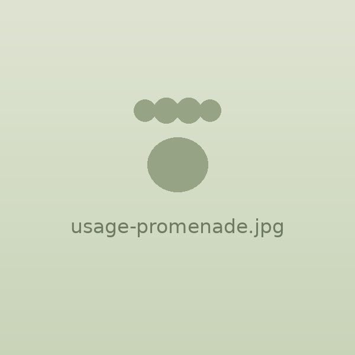
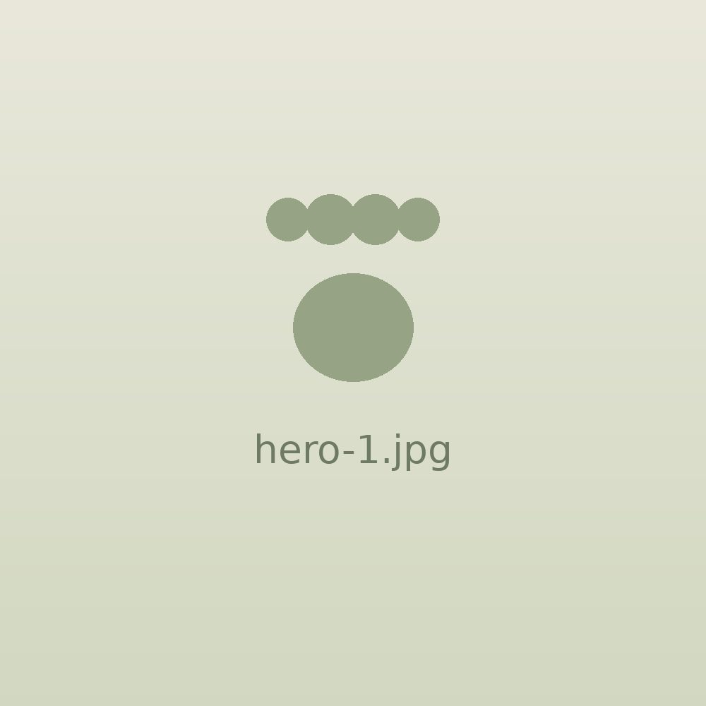
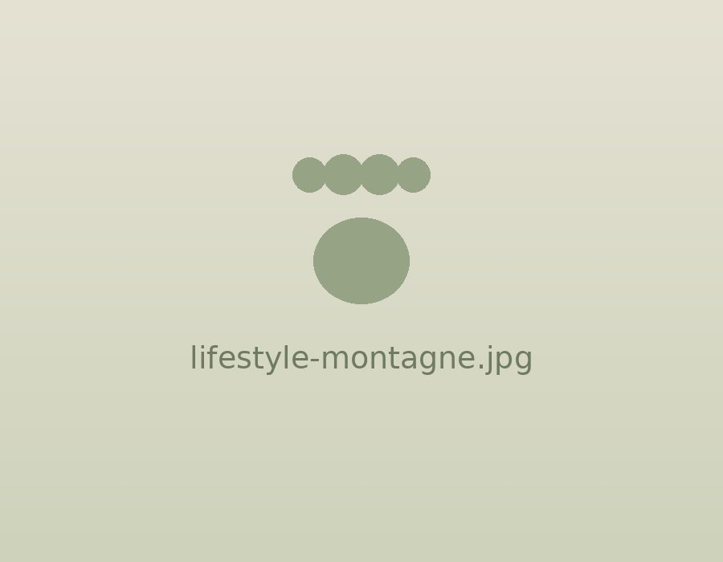
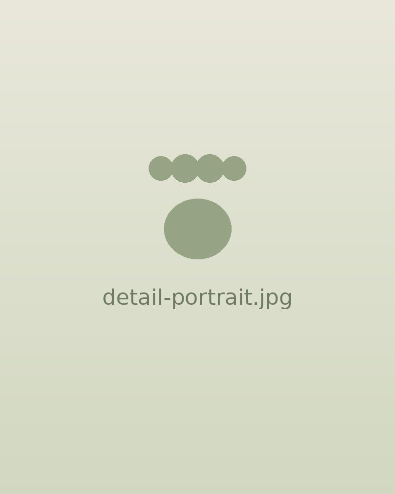
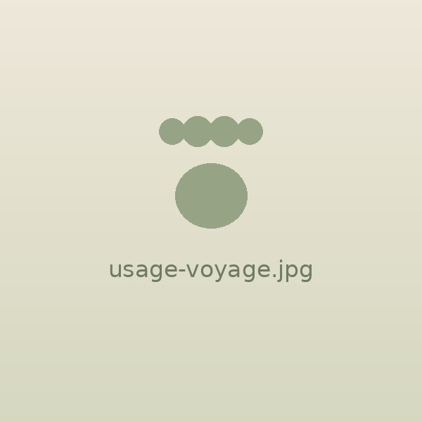
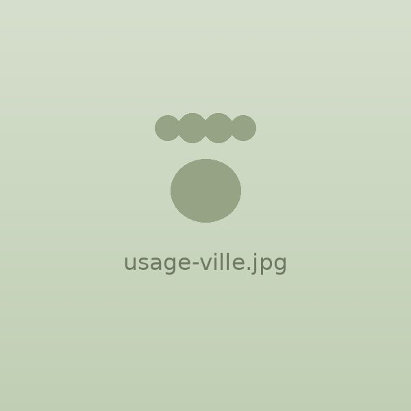
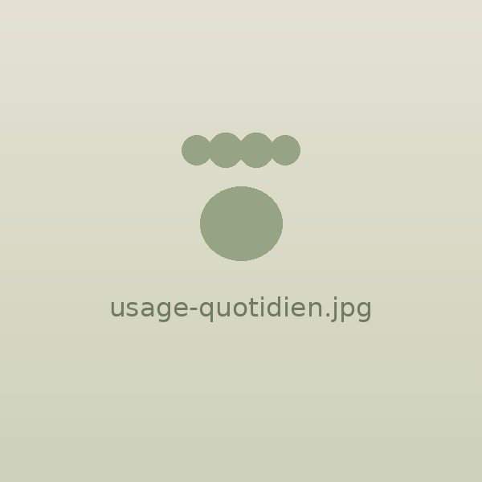
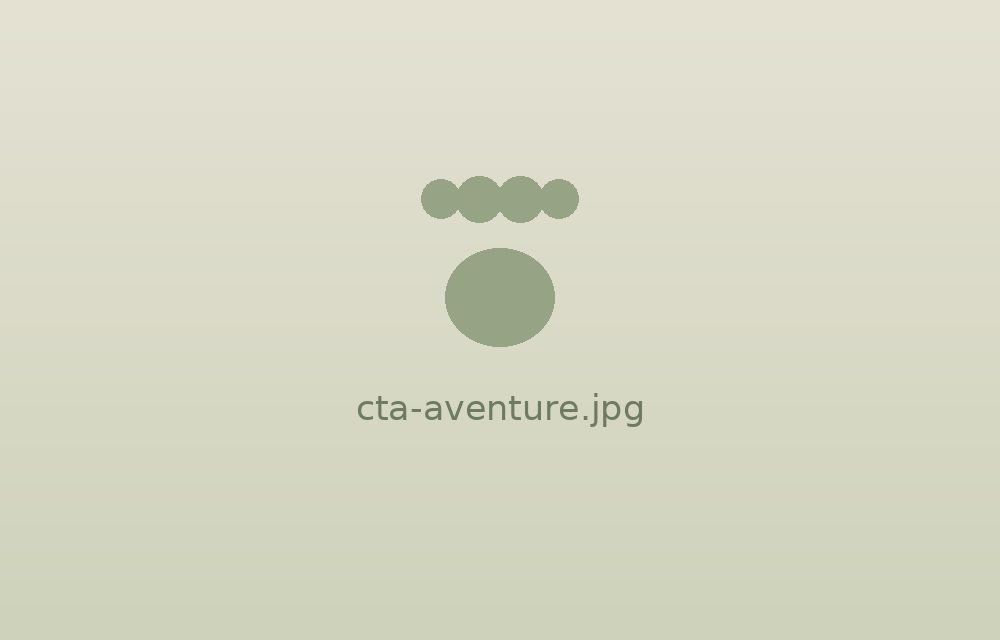

Promenades
Profitez de la nature en toute sécurité.

Explorer
Partager
Grandir
Ensemble
La liberté d'explorer, la sécurité en plus.
Un harnais confortable, léger et sécurisé, conçu pour les chats curieux. Son encolure à cordon bloquant se resserre doucement si votre chat tente de reculer : il reste bien en place, même chez les plus grands évadés. Idéal pour les promenades, les voyages et les aventures du quotidien.
Couleur : Noir
Taille :
Mesurez le tour de poitrine, juste derrière les pattes avant.
Ajouté au panier :
Il explore, se dépense, s'épanouit.
Partagez de nouvelles aventures.
Il reste en sécurité, même s'il recule.
En ville, en nature, en voyage.
Chez FELYZO, nous croyons que chaque chat mérite d'explorer le monde en toute sécurité. Nos harnais sont sélectionnés avec soin pour offrir le meilleur équilibre entre confort, sécurité et liberté de mouvement.



Profitez de la nature en toute sécurité.

Idéal pour les déplacements et les vacances.

Explorez de nouveaux environnements.

Un harnais pratique et confortable.
Des milliers de chats explorent déjà le monde avec FELYZO. Et le vôtre ?

★★★★★
« Parfait ! Mon chat ne s'est plus jamais enlevé le harnais. Très confortable et facile à mettre. »
Sophie L. ✓ Achat vérifié

★★★★★
« Nous faisons maintenant des promenades tous les week-ends. Une vraie liberté pour lui ! »
Thomas R. ✓ Achat vérifié

★★★★★
« Excellente qualité, le système anti-fugue est vraiment efficace. Je recommande ! »
Camille D. ✓ Achat vérifié
Oui. L'encolure se ferme par un cordon à bloqueur : si votre chat tente de reculer, elle se resserre doucement au lieu de s'ouvrir. Combinée aux sangles ventrales réglables, elle empêche le chat de se dégager par l'arrière.
Mesurez le tour de poitrine de votre chat, juste derrière les pattes avant. Chaton : 18–28 cm. M : 28–51 cm (la majorité des chats adultes). L : 51–69 cm. XL : au-delà, pour les grands gabarits type Maine Coon.
Procédez par étapes : laissez-lui découvrir le harnais, faites-lui porter quelques minutes à la maison avec une récompense, puis allongez progressivement. Comptez une à deux semaines avant la première sortie.
Oui, la taille Chaton est prévue pour les jeunes chats de moins d'un an (18 à 28 cm de tour de poitrine). Vérifiez régulièrement le réglage : un chaton grandit vite.
Lavage à la main à l'eau tiède avec un savon doux, puis séchage à l'air libre. Évitez le sèche-linge et l'eau de Javel, qui abîment le mesh et les sangles.
Le harnais, une laisse de 127 cm équipée d'un mousqueton métal rotatif 360° anti-emmêlement, et un guide de démarrage rapide pour habituer votre chat en douceur.
